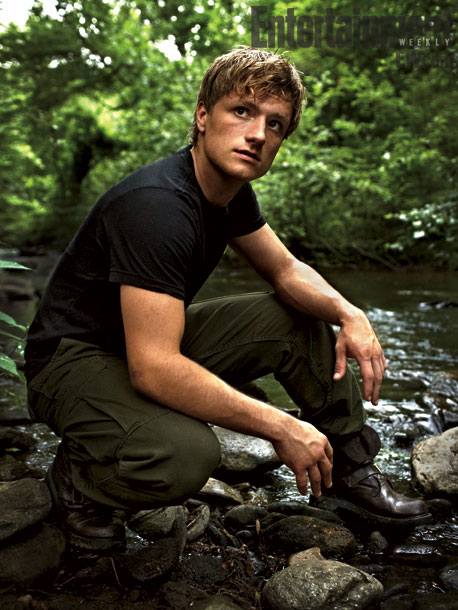
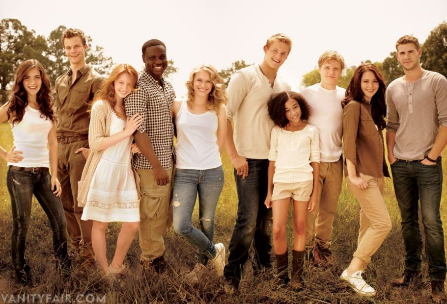

Suzanne Collins Talks About ‘The Hunger Games,’ the Books and the Movies
Interview by David Lethian | 18th of October, 2018

“The Hunger Games,” by Suzanne Collins, came out in 2008. It is the first in a trilogy by the same name that includes “Catching Fire” (2009) and “Mockingjay” (2010). The series has more than 100 million copies in print worldwide, and spent more than 260 consecutive weeks on The Times best-seller list. The books have spawned four record-breaking films and many Katniss Halloween costumes. In a 10th anniversary edition of the book, which hits stores this month, David Levithan, a vice president and publisher at Scholastic Press, interviewed Collins. An excerpt from that interview, including potential spoilers, is below, condensed and edited for clarity and length.
David Levithan: Let’s start at the origin moment for “The Hunger Games.” You were flipping channels one night.
Suzanne Collins: Yes, I was flipping through the channels one night between reality television programs and actual footage of the Iraq War, when the idea came to me. At the time, I was completing the fifth book in The Underland Chronicles and my brain was shifting to whatever the next project would be. I had been grappling with another story that just couldn’t get any air under its wings. I knew I wanted to continue to explore writing about just-war theory for young audiences. In The Underland Chronicles, I’d examined the idea of an unjust war developing into a just war because of greed, xenophobia and longstanding hatreds. For the next series, I wanted a completely new world and a different angle into the just-war debate.
David Levithan: Can you tell me what you mean by the “just-war theory” and how that applies to the setup of the trilogy?
Suzanne Collins: Just-war theory has evolved over thousands of years in an attempt to define what circumstances give you the moral right to wage war and what is acceptable behavior within that war and its aftermath. The why and the how. It helps differentiate between what’s considered a necessary and an unnecessary war. In The Hunger Games Trilogy, the districts rebel against their own government because of its corruption. The citizens of the districts have no basic human rights, are treated as slave labor, and are subjected to the Hunger Games annually. I believe the majority of today’s audience would define that as grounds for revolution. They have just cause but the nature of the conflict raises a lot of questions. Do the districts have the authority to wage war? What is their chance of success? How does the re-emergence of District 13 alter the situation? When we enter the story, Panem is a powder keg and Katniss the spark.

When Peeta throws a starving Katniss bread in the flashback, he’s keeping her alive long enough to work out a strategy for survival. It seemed in keeping with his character to be a baker, a life giver.
David Levithan: Another key piece of The Hunger Games is the voice and perspective that Katniss brings to it. Some novelists start with a character and then find a story through that character, but with The Hunger Games I believe you had the idea for the story first, and then Katniss stepped into it. Where did she come from?
Suzanne Collins: Katniss appeared almost immediately after I had the idea, standing by the bed with that bow and arrow. I’d spent a lot of time during The Underland Chronicles weighing the attributes of different weapons. I used archers very sparingly because they required light and the Underland has little natural illumination. But a bow and arrow can be handmade, shot from a distance, and weaponized when the story transitions into warfare. She was a born archer. Her name came later, while I was researching survival training and specifically edible plants. In one of my books, I found the arrowhead plant, and the more I read about it, the more it seemed to reflect her. Its Latin name has the same roots as Sagittarius, the archer. The edible tuber roots she could gather, the arrowhead-shaped leaves were her defense, and the little white blossoms kept it in the tradition of flower names, like Rue and Primrose. I looked at the list of alternative names for it. Swamp Potato. Duck Potato. Katniss easily won the day.As to her voice, I hadn’t intended to write in first person. I thought the book would be in the third person like The Underland Chronicles. Then I sat down to work and the first page poured out in first person, like she was saying, “Step aside, this is my story to tell.” So I let her.
David Levithan: Why is Peeta a baker?
Suzanne Collins: Bread crops up a lot in The Hunger Games. It’s the main food source in the districts, as it was for many people historically. When Peeta throws a starving Katniss bread in the flashback, he’s keeping her alive long enough to work out a strategy for survival. It seemed in keeping with his character to be a baker, a life giver. But there’s a dark side to bread, too. When Plutarch Heavensbee references it, he’s talking about Panem et Circenses, Bread and Circuses, where food and entertainment lull people into relinquishing their political power. Bread can contribute to life or death in The Hunger Games.
David Levithan: All of the actors did such a fantastic job with your characters. Are there any in particular that have stayed with you?
Suzanne Collins: A writer friend of mine once said, “Your cast — they’re like a basket of diamonds.” That’s how I think of them. I feel fortunate to have had such a talented team — directors, producers, screenwriters, performers, designers, editors, marketing, publicity, everybody — to make the journey with. And I’m so grateful for the readers and viewers who invested in “The Hunger Games.” Stories are made to be shared.
